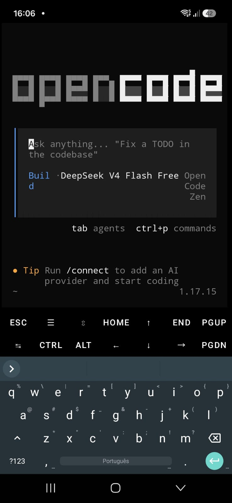

Usando o OpenCode no celular com Termux
O OpenCode é um assistente de programação via terminal que roda direto no CLI. E sim, ele funciona no celular.
O que é o Termux
Termux é um emulador de terminal para Android que também fornece um ambiente Linux mínimo. Ele não precisa de root e dá acesso a um gerenciador de pacotes (APT), shell Bash, Python, Git, SSH e centenas de outras ferramentas nativas. Basicamente, transforma seu celular num ambiente de desenvolvimento portátil.
A instalação é simples: baixe o APK pelo F-Droid (recomendado, versão mais atualizada) ou pelo GitHub. Depois de abrir, rode:
pkg update && pkg upgrade
pkg install python git
Pronto: você já tem Python e Git funcionando.
Por que o proot-distro é necessário
O Termux tem uma limitação importante: por questões de segurança do Android (SELinux, isolamento de processos), ele não consegue acessar certas chamadas de sistema que programas comuns esperam. Isso significa que algumas ferramentas podem falhar ou se comportar de forma inesperada.
O proot-distro resolve isso. Ele usa proot para simular um ambiente chroot sem precisar de root. Com ele, você instala distribuições Linux completas (Ubuntu, Debian, Arch) dentro do Termux, com acesso a chamadas de sistema reais e um sistema de arquivos isolado.
Para instalar:
pkg install proot-distro
proot-distro install ubuntu
proot-distro sh ubuntu --isolated
???+ warning ""
O uso do parâmetro `#!bash --isolated` elimina o mapeamento de diretórios do Termux.
Isso pode contribuir com sua segurança, pois dificulta o acesso da IA aos dados do celular.
Dentro da distro, você tem um ambiente Ubuntu praticamente completo. É lá que o OpenCode roda sem problemas de compatibilidade.
Instalando o OpenCode
Dentro do Ubuntu via proot-distro, instale com o instalador oficial:
apt update && apt upgrade -y
apt install curl -y
curl -fsSL https://opencode.ai/install | bash
Depois é só usar:
opencode

/Modelos gratuitos
O OpenCode oferece uma série de modelos gratuitos para teste via OpenCode Zen, com limites generosos de uso. Você pode começar a usar imediatamente sem precisar de cadastro ou cartão de crédito. Os modelos gratuitos variam com o tempo, mas os disponíveis na publicação do post são:
- Big Pickle — modelo da própria equipe do OpenCode
- DeepSeek V4 Flash Free
- MiMo-V2.5 Free
- North Mini Code Free
- Nemotron 3 Ultra Free (NVIDIA)
Os modelos gratuitos possuem limitações de requisições e tokens diários, mas são suficientes para experimentar a ferramenta e tarefas de código e/ou escrita básicas.
Para rodar modelos de outros provedores, use o comando /connect para configurar sua própria chave para a maioria das empresas e modelos do mercado. Para ver a lista completa de modelos disponíveis, use /models.
Como é a experiência no dia a dia
Uma sessão típica funciona assim:
- Abra o Termux
- Rode
proot-distro login ubuntu - Navegue até seu projeto com
cd - Execute
opencodee comece a programar
O teclado virtual do celular é o ponto mais desconfortável — um teclado físico Bluetooth ou um cliente SSH do computador ajuda muito. Fora isso, a performance é surpreendentemente boa em dispositivos com 4 GB de RAM ou mais.
Considerações finais
Usar o OpenCode no celular com Termux + proot-distro é uma forma prática de ter um ambiente de desenvolvimento completo no bolso. Não substitui um desktop para trabalho pesado, mas é excelente para experimentos, correções rápidas e aprendizado em qualquer lugar.